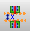
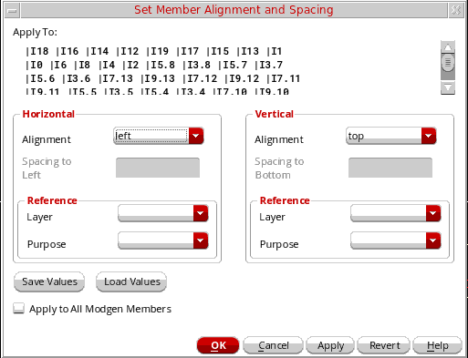
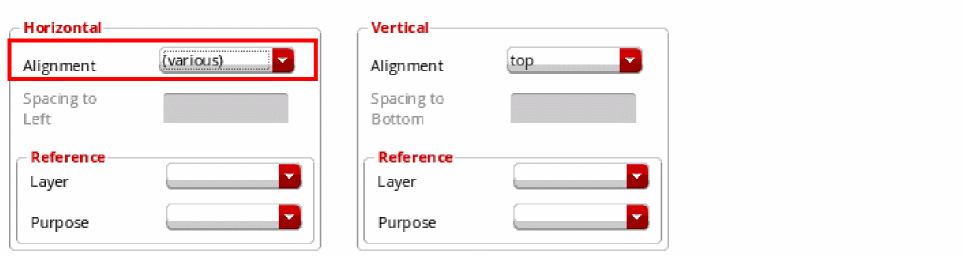
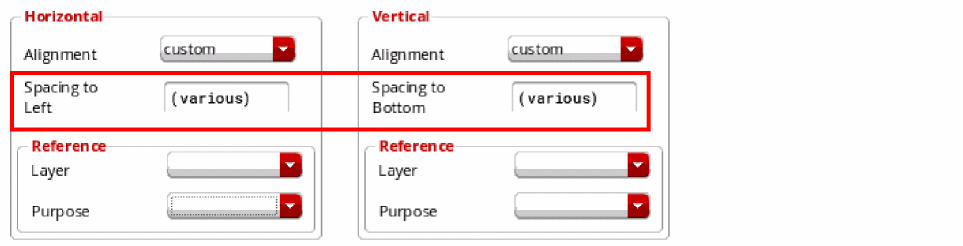

Specifying Modgen Device Alignment and Spacing
The Set Member Alignment and Spacing form lets you specify alignment and spacing settings for Modgen members.
A Modgen can contain instances with different Pcell masters. The instances can have different dimensions. To arrange instances with different heights within a module, you can use the Set Member Alignment and Spacing form to specify a vertical bounding box alignment (top, center, or bottom).
When devices are aligned at the top, the top edges of the instances are aligned at the same Y-coordinate, while bottom edges are aligned at the same Y-coordinate for bottom alignment. For center alignment, the center of shorter instances are aligned with the center of the largest instance.
The default vertical alignment is bottom. You can modify this alignment using either the align commands in the shortcut menu or the Set Member Alignment and Spacing form.
When you launch the Set Member Alignment and Spacing form, the alignment, reference layer, and horizontal and vertical spacing values of the selected Modgen devices are loaded in the form. Therefore, the values reflect the current design selection.
You can click Load Values in the form to load the default alignment, reference layer, horizontal and vertical spacing values from the corresponding environment variables.
Aligning Modgen Devices Using the Shortcut Menu
To modify device alignment using the shortcut menu:
- Open a Modgen in the Modgen Editor.
- Select the devices you want to align.
- Right-click and choose one of the following options:
Aligning Modgen Devices Using the Alignment and Spacing Form
To align devices using the Set Member Alignment and Spacing form:
- Open the Modgen in the Modgen Editor.
-
(Optional) Select the devices you want aligned.
If you do not select any device, the settings are applied to all devices in the current Modgen. -
Do one of the following:
- Right-click and choose Set Member Alignment/Spacing.
- Click the Member Spacing/Alignment icon  on the Modgen Placement toolbar.
The Set Member Alignment and Spacing form appears.
You can also specify Modgen alignment and spacing parameters directly in the layout canvas. To do this, select the required devices and choose Place—Modgen—Set Member Alignment and Spacing to display the Set Member Alignment and Spacing form. -
Select an Alignment value in the Horizontal section to specify the alignment of instances along the horizontal axis, which is the x-axis.
The available options are left, right, center, and custom, and customRight.
In the above example, all selected instances have the same vertical and horizontal alignments, left and top respectively.
In the following example, the selected instances have the same vertical alignments, but their horizontal alignments are different. So, the horizontal Alignment is set to (various).
 -
Select an Alignment value in the Horizontal section to specify the alignment of instances along the horizontal axis, which is the x-axis.
The available options are top, bottom, center, custom, and customTop.
The spacing field is available only when the Alignment is set to custom or customRight or customTop in either one or both of the Horizontal and Vertical sections. - Specify the horizontal spacing values in the Spacing to Left field.
-
Specify the vertical spacing in the and Spacing to Bottom field.
By default, if the spacing values are different for the selected instances, then (various) is displayed.
 - In the Reference section, select a reference Layer.
-
Select a reference Purpose.
Similar to Alignment and Spacing fields, if the layers and purposes are different for the selected instances, then (various) is displayed. You can reset these values. - Click Save Values to overwrite environment variables with the values specified in the Set Member Alignment and Spacing form.
-
Select Apply to All Modgen Members to apply the custom spacing to all the devices in the module.
If you do not select this option, custom spacing is applied only to the selected devices. - Click OK.
The alignment and spacing of the Modgen members is updated based on the values you specified.
In the presence of WSPs in a design, the WSP grid is ignored when placing individual Modgen members in rows. Instead, the settings in the Set Member Alignment and Spacing form are honored. However, the Modgen figGroup honors WSP settings and is snapped to the nearest WSP grid.
Removing a Custom Spacing Distance
Custom spacing is interpreted internally as a custom alignment. To completely remove a custom spacing distance, you must choose an alignment for the devices.
Related Topics
Set Member Alignment and Spacing Form
Specifying Modgen Device Alignment and Spacing
Return to top